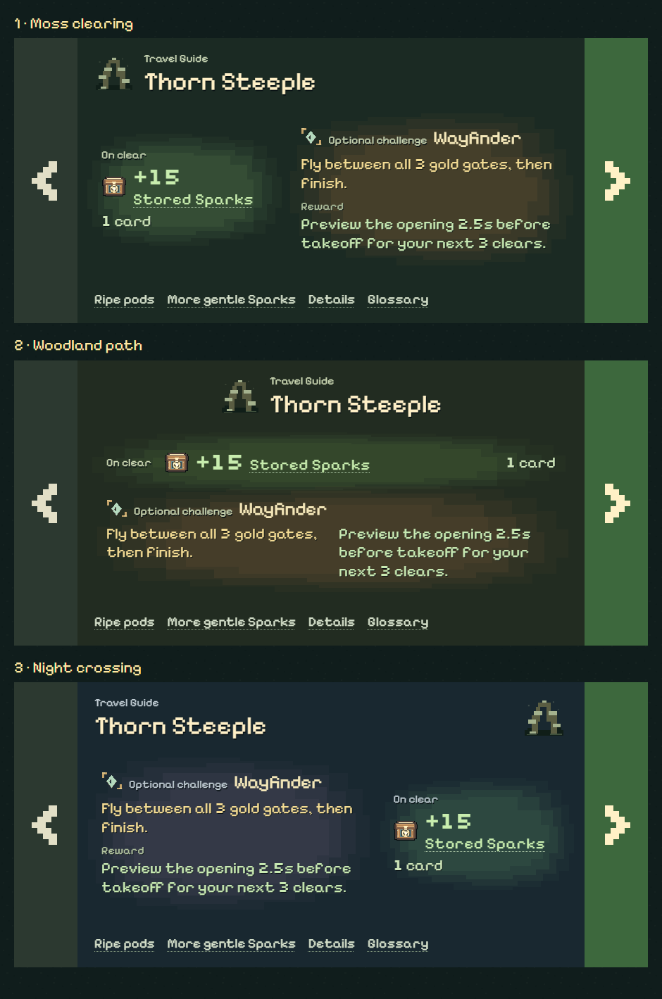

Travel Guide
1 · Moss clearing
2 · Woodland path
3 · Night crossing
Moss clearing
Reward beside the challenge, with quiet moss and ochre ink.
Landscape
Pixel · 900 × 405
Short · 667 × 300
Reopen guide
Open full size ↗
Loading the guide…
Compare all three pictures
